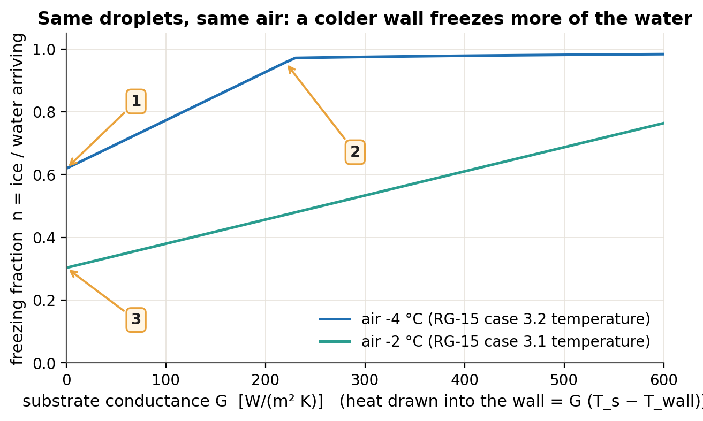
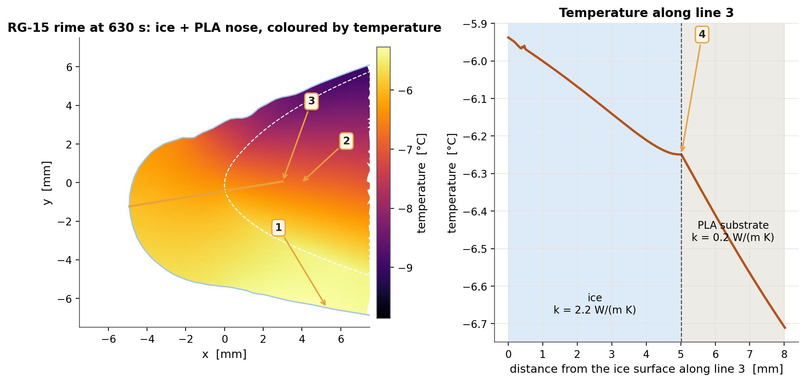
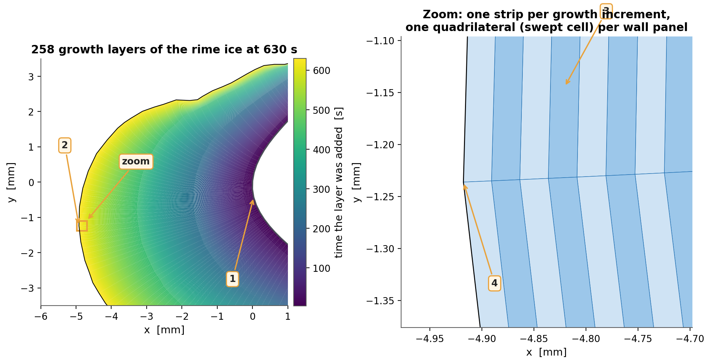
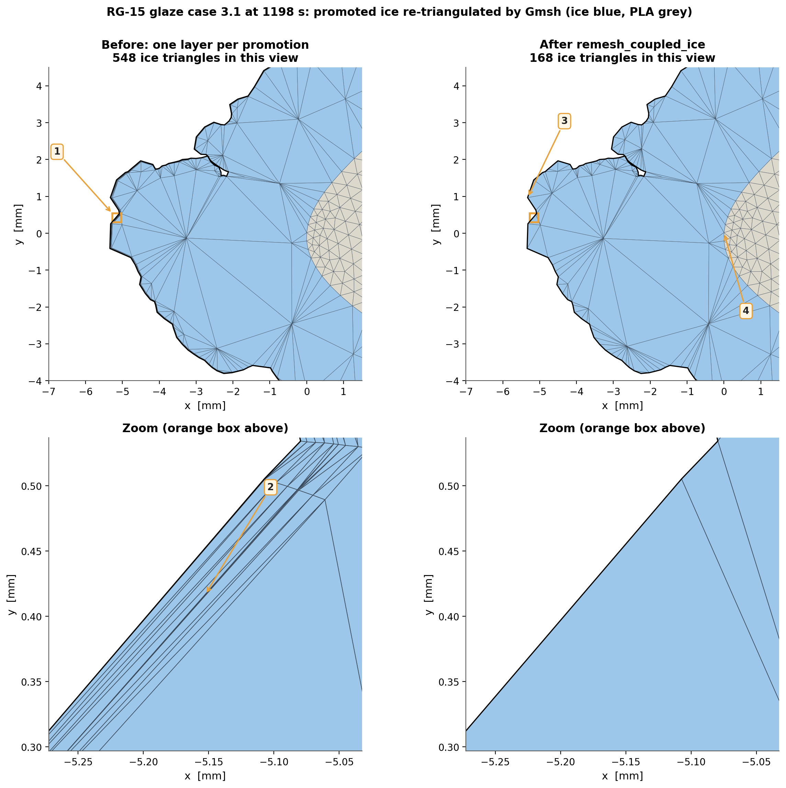
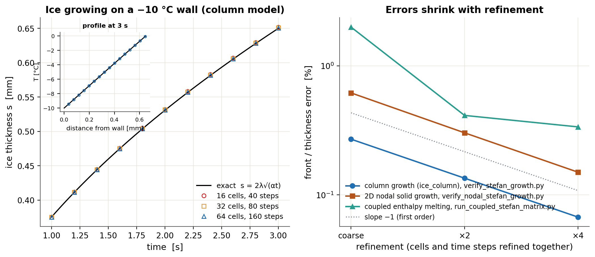

Heat inside the ice
The freezing balance of Step 5 needs to know how much heat the wall can take away. That heat flows by conduction into the ice already there and into the wing skin below it. This page follows how the solver models that conduction, from a single fixed number to a 2D triangle mesh with melting and freezing inside it, and how it checks the result against an exact solution.
- Why conduction changes the ice Basic
- Four models, one ladder Basic
- Rungs 1 and 2: a fixed conductance and 1D slabs Intermediate
- Rung 3: a column that grows Intermediate
- Rung 4: the 2D conducting solid Intermediate
- How the surface balance talks to the solid Intermediate
- Growth layers: the swept-cell inventory Advanced
- Enthalpy: melting and freezing inside the solid Advanced
- Remeshing the solid without losing heat Advanced
- Checking against an exact answer: the Stefan problem Advanced
- Assumptions and limits Advanced
Why conduction changes the ice Basic
When a supercooled droplet freezes, it releases latent heat: 333.7 kJ for every kilogram (LF in icing/thermo.py). That heat has to go somewhere, or the water cannot freeze. On the freezing energy balance page the main sink was the cold air: convection carries heat away at a rate \( h\,(T_s - T_{rec}) \), where \( h \) is the heat-transfer coefficient from the CFD, \( T_s \) the surface temperature and \( T_{rec} \) the recovery temperature of the air.
But there is a second sink. Under the surface sits the ice that has already formed and, under that, the wing skin. If they are colder than the surface, heat flows into them. Every joule that goes into the wall is a joule the air does not have to remove, so more water can freeze. The solver writes this directly in its phase closure. In thermo.phase_cell the "cooling" term contains both the air and the wall, and the freezing demand is computed from it:
def parts(t):
evap = min(available, evaporation_flux(t, htc, env) * length * dt)
cooling = (htc * (t - env.recovery_temperature)
+env.substrate_conductance*(t-env.substrate_temperature)) * length * dt
return evap, cooling
evap, cooling = parts(TM)
remaining = available - evap
freeze_demand = (cooling + evap * LV - source) / LF
In words: at the melting point, add up the heat the air takes (convection), the heat the wall takes (substrate term) and the heat evaporation takes; subtract the heat the droplets bring; divide by the latent heat. That is how many kilograms can freeze. If the demand is smaller than the water available, the rest stays liquid (glaze). If it is larger, all the water freezes and the surface cools below 0 °C (rime).

thermo.phase_cell called with toy inputs: 25 m/s, LWC 0.52 g/m³, collection efficiency 0.6, \( h = 250 \) W/(m²K), wall reservoir at air temperature. Only the substrate conductance \( G \) changes. 1: at −4 °C with an insulated wall (\( G=0 \)), 62 % of the water freezes. 2: near \( G \approx 230 \) W/(m²K) all water that does not evaporate freezes and the surface leaves 0 °C: the panel has switched from glaze to rime only because the wall is colder. 3: at −2 °C the effect is the same in kind: 30 % freezes on an insulated wall, 76 % at \( G=600 \). Toy numbers, not a run; script _build/fig_solid.py.Ice is a heat sponge with a limited appetite. A cold wing skin soaks up some of the latent heat of freezing, so more water freezes and the ice shape changes. But the sponge fills: as the ice and skin warm up, they take less. To get this right the solver must follow the temperature inside the solid over time, not just at the surface.
That last point is the reason for everything that follows. A fixed conductance with a fixed wall temperature (the toy in Figure 1) never warms up, so it overstates the effect at long times. A real wall stores heat and warms. Its own ice layer grows thicker, which adds resistance. And for glaze, the solid can be at 0 °C with water inside it. Each rung of the model ladder below adds one of these effects.
Four models, one ladder Basic
The code still contains every stage of this development. They are not alternatives you pick at random: each one was built, checked, and then used as a building block of the next.
| Rung | Model | Main code | What it adds | Where it is used today |
|---|---|---|---|---|
| 1 | Fixed reservoir conductance | ThermalEnvironment.substrate_conductance | Heat to a wall at fixed temperature | Optional term in the simple controller (icing run); default 0 |
| 2 | 1D slab / layered column | substrate.advance_slab, advance_column, thermal_coupling.phase_with_column | Heat storage and through-thickness conduction | Python API, verification |
| 3 | Growing ice column | ice_column.grow_column, column_remap.remesh_column | New ice cells add resistance and capacity | Stefan verification (tools/verify_stefan_growth.py) |
| 4 | 2D conducting solid on triangles | solid_fem.SolidFEM, solid_phase, nodal_* | Real geometry, sideways conduction, ice + substrate materials | Rime: icing run-nodal and rime campaigns |
| 5 | 2D enthalpy solid | enthalpy_conduction.advance_enthalpy, element_phase, enthalpy_growth | Melting and refreezing inside the solid | Glaze: icing run-coupled and glaze campaigns |
Rungs 1 and 2: a fixed conductance and 1D slabs Intermediate
Rung 1 is the simplest: a prescribed conductance \( G \) in W/(m²K) to a reservoir at a fixed temperature, so the wall takes \( q = G\,(T_s - T_{wall}) \). docs/MODELS.md is blunt about it: it "represents an explicitly prescribed, quasi-steady thermal resistance; it does not solve substrate temperatures". The default is \( G = 0 \), an insulated wall.
Rung 2 gives the wall a memory. substrate.advance_column splits the wall under one panel into depth cells, each with its own width \( \Delta z_i \), conductivity \( k_i \), density and specific heat. The heat equation in one dimension,
is discretised with finite volumes and the backward Euler method: the conduction fluxes are evaluated at the end of the time step. That makes each step a small linear system, but it never goes unstable however large the step. Two cells exchange heat through a face conductance equal to one over the sum of their half-cell resistances, \( G_{i+1/2} = 1 / \left(\tfrac{\Delta z_i}{2k_i} + \tfrac{\Delta z_{i+1}}{2k_{i+1}}\right) \), which keeps heat flux continuous where ice meets skin.
capacity = rho * cp * dz
half_resistance = dz/(2*k)
conductance = 1/(half_resistance[:-1]+half_resistance[1:])
...
# Solve for the temperature increment to avoid subtracting large absolute
# thermal energies when auditing a small heat exchange.
diagonal = capacity / dt
internal = conductance * np.diff(old)
rhs[:-1] += internal
rhs[1:] -= internal
...
delta = solve_banded((1, 1), bands, rhs)
stored = float(np.dot(capacity, delta))
return new, float(heat_in), float(heat_out), stored, float(stored - dt * (heat_in - heat_out))
Two habits that run through the whole solver appear here first. The unknown is the temperature increment, not the temperature itself, because subtracting two large absolute energies would lose digits. And every step returns an energy residual: stored energy minus net heat in. A step whose ledger does not close is a bug, not a result.
How does a surface balance use such a column? thermal_coupling._phase_response uses a neat trick. Because the column is linear, the heat it takes is an affine function of the surface temperature, \( q = G\,(T_s - T_{ref}) \). The code finds \( G \) and \( T_{ref} \) by solving the column twice, at \( T_m \) and at \( T_m - 1 \) K, without advancing it. Then it reuses the rung-1 closure with that effective conductance, and finally advances the column once at the accepted surface temperature:
high = solve(TM)
low = solve(TM-1.)
conductance = high.surface_heat_in - low.surface_heat_in
reference = TM - high.surface_heat_in / conductance
response_env = replace(env, substrate_conductance=conductance,
substrate_temperature=reference)
...
phase = phase_cell(available, impinged, kinetic, length, dt, htc, response_env)
...
solid = solve(phase[3])
So rung 2 does not replace rung 1; it computes the conductance that rung 1 needs, from the actual stored heat, for every time step.
Rung 3: a column that grows Intermediate
Ice is itself a conductor (2.2 W/(m K) in the RG-15 cases) and a heat store. As it thickens, heat from the surface has further to go. ice_column.grow_column adds the freshly frozen ice as a new cell on top of the column after each conduction step:
phase = phase_with_column(available, impinged, kinetic, length, dt, htc, env,
column.widths, column.conductivity, column.density, column.specific_heat,
column.temperature, back_temperature, ...)
thickness = phase.ice/(length*ice_density)
if thickness > 0:
arrays = [np.r_[value, a] for value, a in zip(
(thickness, ice_conductivity, ice_density, CI), arrays)]
temperature = np.r_[phase.surface_temperature, temperature]
flags = np.r_[True, flags]
The module docstring states the cost of this simplicity: "New ice is added AFTER conduction through the existing layers in each step. Time refinement is required; this is not a moving-boundary implicit solution." Because every step adds a cell, the column would grow without limit; column_remap.remesh_column re-divides each material layer into a fixed number of equal cells, moving heat by exact overlap integrals, and raises an error if the column enthalpy changes by more than \( 10^{-10} \) of its size.
The bookkeeping rule behind this rung is stated in docs/PHYSICS_REVIEW.md ("Governing thermal balance"): using liquid water at \( T_m \) as the zero of energy, ice holds \( -L_f + c_i (T - T_m) \) per kilogram, so external energy in = change of existing solid energy + energy carried by the newly deposited ice. Heat flowing from the surface into the solid is internal and must cancel. grow_column returns exactly this residual.
Rung 4: the 2D conducting solid Intermediate
A 1D column cannot carry heat sideways. At a leading edge that matters: the stagnation line is wet and warm, the flanks a few millimetres away may be dry and cold, and the ice horns are thicker than the skin. solid_fem.SolidFEM solves 2D heat conduction on a triangle mesh that covers both the wing skin (here the PLA of the RG-15 model, \( k = 0.2 \) W/(m K), \( \rho c = 1.8 \) MJ/(m³K), the "PLA properties" in tools/prepare_rg15_glaze_package.py) and every bit of ice added so far (\( k = 2.2 \), \( \rho c = 917 \times 2100 \)).
It uses linear triangles: temperature varies linearly inside each triangle and lives on the corners (nodes). Each triangle's heat capacity is lumped to its three corners in equal thirds. One backward-Euler step solves
$$ \left(\frac{M}{\Delta t} + K + R\right)\,\Delta T = P + b - (K + R)\,(T^{old} - T_{ref}), $$where \( M \) is the diagonal (lumped) capacity, \( K \) the conduction matrix, \( R \) and \( b \) an optional convective (Robin) boundary condition, and \( P \) prescribed nodal powers.
local = k[:,None,None]*self.area[:,None,None]*np.einsum('eik,ejk->eij',gradient,gradient)
self.stiffness = coo_matrix((local.ravel(),(rows,cols)),shape=(n,n)).tocsr()
self.element_capacity = c*self.area
self.capacity = np.bincount(self.triangles.ravel(),
weights=np.repeat(self.element_capacity/3,3),minlength=n)
...
matrix = diags(self.capacity/dt)+self.stiffness+exchange
rhs = force+load-exchange@old-self.stiffness@(old-reference)
delta[free] = spsolve(matrix[free][:,free],rhs[free]-matrix[free][:,fixed]@delta[fixed])
The constructor also refuses bad elements. A triangle whose area is only round-off is rejected outright, with a comment that explains why: such an element "conducts with k*cot(angle) ~ 1e15 W/m/K", and in the returned glaze run glz81_32 one such flat triangle made every later solve fail its energy audit (DEGENERATE_SINE, GLAZE_ROBUSTNESS R41). Reading that run's 926 s checkpoint with today's SolidFEM indeed stops on "element 28808 ... area 3.31e-24 m2".

runs/nibi/ms_rg15/snapshot_20261111/.../shot_04/adapt/solid.json: 152,878 nodes, 305,022 triangles). White dashed line: the clean PLA wall; light blue line: the ice surface. 1: the warmest node, −5.3 °C, on the lower side where most water arrives and freezes: the latent heat warms the ice. 2: the PLA interior. The coldest solid is the upper side, −9.9 °C, close to the air. 3: a line from the ice tip into the nose. 4: along that line the ice (5.0 mm thick here) has a gradient of 0.070 K/mm and the PLA 0.164 K/mm. In steady 1D conduction the ratio would equal the conductivity ratio, 11; it is 2.3 here because heat also flows sideways and the PLA is still warming up. That difference is exactly what the 2D transient model is for.The rime production path (icing run-nodal, and the rime campaigns built on it) is called the nodal path because the film, the phase balance and the solid all share the same boundary nodes. One coupled step (nodal_coupling.advance_coupled_nodal_step) refreshes CFD and droplet loads, then nodal_snapshot.advance_snapshot_increment holds those loads for one growth increment (4 s nominal in the RG-15 cases), sub-stepped at thermal_step = 0.005 s by nodal_increment.advance_nodal_increment: runback transport, then the phase/solid solve, repeated. At the end of the increment the frozen mass is added to the geometry as a new layer of ice (next sections).
How the surface balance talks to the solid Intermediate
The 2D version of the rung-2 trick lives in solid_phase._phase_with_contact. The solid's response at the wall nodes is condensed once per increment into a dense contact conductance matrix: if the wall temperatures are \( T_s \), the heat the solid takes is \( q = \Delta t\,G\,(T_s - T_{base}) \), where \( T_{base} \) is what the wall would read if no heat crossed it this step. Each wall node then has the surface balance of Step 5 with this conductive sink, solved together for all nodes:
def terms(t):
ev=np.minimum(water,evaporation_flux(t,h,env)*lengths*dt)
conducted=dt*(conductance@(t-base))
cooling=dt*lengths*h*(t-recovery)
return ev,conducted,cooling
...
def residual(trial):
ev,q,cooling=terms(trial)
balance=source+(water-ev)*(LF-CI*(trial-TM))-q-cooling-ev*(LV+CVAP*(trial-TM))
return np.where(wet,trial-TM,balance/scale)
The unknowns are the wall temperatures. Wet nodes are pinned at \( T_m \) (their freezing amount follows from the leftover heat); dry nodes solve the balance for their temperature. Which nodes are wet is itself decided by an active-set loop: a wet node whose freezing demand exceeds its water becomes dry; a dry node that would rise above \( T_m \) becomes wet. After convergence the solid is advanced once with the accepted wall powers, and three residuals are checked: surface, solid, and combined ('Coupled solid/phase energy balance failed' otherwise). Because \( G \) comes from the actual mesh, the coupling is implicit and exact for the linear solid; no iteration between "fluid side" and "solid side" is needed.
solid_phase._contact_conductance, built from the factorised solid matrix with at most 32 right-hand sides at a time). The nonlinear part (wet/dry switching, evaporation) is solved only on the wall nodes.Growth layers: the swept-cell inventory Advanced
When an increment ends, the frozen mass at each wall node becomes geometry. nodal_growth.grow_nodal_deposition moves each wall vertex outward to make room for the ice, and the region swept by each panel becomes one swept cell: a quadrilateral (or a triangle where two vertices merged) between the old and the new wall. All the cells of one increment form one layer. material_inventory.IceInventory stores the layers in order; each cell keeps its polygon and its fragments: which panel the ice came from, its mass, its enthalpy at deposition, its density and conductivity.
The rules are strict (IceInventory.validate): consecutive layers share their interface exactly, earlier layers are never stretched, and the fragment volumes (mass/density) must fill each cell's geometric area. "Appending growth never stretches existing layers" (module docstring). Then solid_growth.append_conducting_layer triangulates the new cells and adds them to the conduction mesh without moving any old node.

Why keep this history at all, if conduction runs on the triangle mesh? Three reasons, all from the code:
- Material identity. Ice and substrate are told apart by geometry, never by their property values ("Material identity comes from geometry", ENTHALPY_CONDUCTION.md). The inventory is the geometric record.
- Audits. Every saved checkpoint (
nodal_checkpoint.save_nodal_checkpoint, schema 2) re-validates the layers against the mesh and the energy ledger before writing. - Later changes. When ice is cut back (recession) or re-resolved, the inventory changes type:
cut_inventory.CutIceInventorykeeps the clipped pieces with their provenance (schema 3), andresolved_inventory.ResolvedIceInventoryties each piece to a thermal material label on the mesh (schema 4).load_nodal_checkpointreads all three.
A fragment's deposition enthalpy is history, not the current state. CONDUCTING_GROWTH.md insists: "Fragment enthalpies remain deposition provenance after conduction; do not reinitialize the current solid from them." The current temperature lives on the mesh nodes; the inventory says what material is where. When new triangles join old ones, shared nodes mix their temperatures (capacity-weighted), which conserves energy exactly but smooths locally. A zero-time study (runs/growth_projection_refinement_001) measured that this smoothing error decays about linearly with layer thickness.
Enthalpy: melting and freezing inside the solid Advanced
Rung 4 is a cold model: SolidFEM has no phase change, and the nodal path rejects any solid node above \( T_m \) ("Nodal solid temperature requires unsupported phase/range"). For glaze, the ice at the surface sits at 0 °C under a liquid film, and warm water can melt into it. Temperature alone cannot describe a node that is half ice and half water: both are at exactly 0 °C. The fix is to use enthalpy \( H \) (energy content, J per metre of span) as the unknown, and derive temperature and liquid fraction from it.
With liquid water at \( T_m \) as zero, a node holding water mass \( m \) (ice plus liquid) and non-melting capacity \( C \) (the skin) follows (docs/ENTHALPY_CONDUCTION.md):
enthalpy_conduction.equilibrium (not to scale). Along the vertical segment the temperature stays at \( T_m \) while the liquid fraction goes from 0 to 1. There is no artificial "mushy" temperature range: the jump is exact. The two kinks, at \( H = -mL_f \) and \( H = 0 \), are where most numerical trouble starts (Step 10).cold=h < -m*LF; warm=h>0
cc=c+m*CI; cw=c+m*CW
temperature=np.where(cold,(h+m*LF)/cc,temperature)
temperature=np.where(warm,h/cw,temperature)
liquid=np.where(cold,0.,np.where(warm,m,m+h/LF))
One time step of advance_enthalpy then solves, for every node at once, the backward-Euler balance
The temperature is a non-smooth function of \( H \) (flat on the plateau), so this is a non-smooth nonlinear system. The solver tries, in order, a primal-dual active set (fix each node's branch, cold, plateau or warm, solve the resulting linear system exactly, reassign branches, repeat), a line-searched semismooth Newton method, a smoothed convex Newton continuation, and finally Gauss-Seidel sweeps that invert each scalar balance exactly. All paths share the same acceptance test: every nodal residual within \( 10^{-9} \) relative plus a floating-point bound, temperatures in 223.15-313.15 K, and a global energy audit. A failure raises ThermalStepLimit ("reduce timestep"); nothing is clipped.
balance=h-old+dt*(stiffness@theta-forcing)
if (not np.isfinite(h).all() or np.any(abs(balance)>1e-9*scale+roundoff(theta))
or np.any(t<223.15) or np.any(t>313.15)):
raise ThermalStepLimit('Enthalpy conduction failed residual or temperature-range check ...')
...
error=float(np.sum(h-old)-external)
if abs(error)>1e-9*max(1.,float(np.sum(abs(h-old)+dt*(abs(p)+abs(boundary_power)))))+attainable:
raise ThermalStepLimit('Enthalpy conduction global energy audit failed ...')
Two helpers make the enthalpy solid usable with growing ice:
element_phase.partition_enthalpysplits each node's ice and liquid back onto the triangles around it, in the same equal-thirds shares used to lump them. It "retains melt location" so later steps know which elements hold water; it does not invent a sharp front inside a triangle.enthalpy_growth.append_enthalpy_layeradds new frozen ice to the mesh while copying the old nodal enthalpy verbatim. The older temperature-only append (append_conducting_layer) could not, because a node at exactly 0 °C may hold any amount of latent energy. New element mass and enthalpy are lumped to corners; shared nodes re-equilibrate, which COLUMN_ICE_GROWTH.md warns "may melt some newly added ice beside warm retained material" as a projection effect.
On the glaze path the solid enthalpy, the solid water mass and the substrate capacity are stored explicitly in a CoupledColumnHistory (coupled_column_checkpoint.py), together with the film columns on top; Step 10 follows that story.
Remeshing the solid without losing heat Advanced
Appending a layer per increment never removes a node. On the glaze path, where ice is promoted in thin layers, the solid mesh of RG-15 case 3.2 had grown to 63,606 nodes by 1200 s, with minimum angles of 0.04° and 15 % positive off-diagonal matrix entries (GLAZE_ISSUE_HISTORY O10, GLAZE_ROBUSTNESS R26). Positive off-diagonals mean the matrix is no longer an M-matrix, so the discrete solution can overshoot. Three tools exist to keep the solid mesh healthy:
- Conservative transfer,
solid_remap.transfer_solid_temperature: given any new conforming mesh of the same domain, intersect every old/new triangle pair exactly, integrate products of the linear shape functions, weight by heat capacity, and divide by the new nodal capacity. Triangles that did not change copy their contribution exactly. The result conserves sensible energy to round-off, keeps every temperature inside the old range, and refuses to mix two material regions (docs/SOLID_REMESH_TRANSFER.md). - Bounded coarsening for the rime path,
solid_maintenance.maintain_nodal_solid(case optionsolid_maintenance): remove interior nodes on edges shorter thanmin_edgeby ear-clipping the node's star, only if the local quality improves and all incident triangles share one material label, then transfer as above. - Gmsh re-triangulation for the glaze path,
coupled_solid_remesh.remesh_coupled_ice(glaze controlsolid_remesh): every connected ice component is re-meshed with all its boundary vertices and material interfaces fixed. The water's specific enthalpy is projected with the same positive overlap transfer, the mass is normalised (the factor must differ from one by round-off only) and a uniform shift closes the last round-off in energy.
remap=transfer_solid_temperature(old_sub,new_sub,specific[nodes])
old_mass=float(element[region].sum())
mass=new_sub.volumetric_capacity*new_sub.area/CI
factor=old_mass/float(mass.sum())
if abs(factor-1)>NORMALIZATION_LIMIT:
raise ValueError(f'Ice remesh mass normalization {factor-1:.3g} exceeds roundoff')
...
shift=(old_energy-float(nodal@remap.temperature))/old_mass

remesh_coupled_ice run locally (Gmsh 4.13.1, 5 s) on the returned RG-15 glaze 3.1 checkpoint at 1198 s (runs/nibi/glz81_31/.../shot_07/ice/slot_0). Top: the leading edge; bottom: the orange box. 1, 2: before, every promotion left a layer of thin triangles along the wall; in the zoom they are stacked slivers (shape quality as low as 0.002, where 1 is equilateral). After: 168 ice triangles instead of 548 in the top view; 4 instead of 109 have quality below 0.05. 3: wall vertices are kept exactly, so the film columns and the CFD wall are untouched. 4: the ice/PLA interface is kept exactly. Whole mesh: 15,087 → 14,609 nodes (the run's own remesh at 1200 s also ended at 14,609), positive off-diagonal fraction 1.12 % → 0.25 %, mass change 2.8×10⁻¹⁷ kg/m, energy change 0 J/m, temperature range unchanged (−1.79 to 0 °C). The minimum angle (0.055°) does not change: it is the taper of the deposit edge, fixed by the boundary.The projection smooths gradients inside the ice; it is "not point interpolation" (module docstring). The 2026-11-12 entry of PHYSICS_REVIEW.md measured the effect on RG-15 3.1 shot 1: total ice +0.011 % with three remeshes, film −0.2 %. It also records a cost limit: the overlap search is a Python loop, and a first remesh of the un-remeshed 63,606-node state did not finish in 25 minutes. Hence the advice to enable it from the first shot.
Checking against an exact answer: the Stefan problem Advanced
Conservation checks show that no energy is lost. They do not show that the energy goes to the right place at the right time. For that the project uses the classical one-phase Stefan problem: liquid water at \( T_m \) freezes onto a wall held at a cold temperature \( T_c \). Nothing else happens: no air, no evaporation. It has an exact similarity solution (PHYSICS_REVIEW.md, "Governing thermal balance"):
$$ s(t) = 2\lambda\sqrt{\alpha t}, \qquad \lambda\, e^{\lambda^2}\,\mathrm{erf}(\lambda) = \frac{c_i (T_m - T_c)}{L_f \sqrt{\pi}}, \qquad \alpha = \frac{k}{\rho c_i}, $$where \( s \) is the ice thickness. With \( T_c = -10 \) °C, \( k = 2.2 \), \( \rho = 917 \), the Stefan number is 0.0629 and \( \lambda = 0.1756 \) (runs/stefan_growth_verification_001/report.json). Three independent tools check three rungs of the ladder:
tools/verify_stefan_growth.py: the growing column (rung 3), from 1 to 3 s, cells and steps refined together.tools/verify_nodal_stefan_growth.py: the 2D nodal solid with layer insertion (rung 4), report inruns/stefan_growth_001.tools/run_coupled_stefan_matrix.py: the coupled enthalpy history of the glaze path (rung 5), here as melting with an imposed similarity heat flux; a 3×3 space/time matrix run by the user (tmp/coupled-stefan-matrix-1, docs/COUPLED_STEFAN_RETURN.md).

verify_stefan_growth.py (0.3 s of computing). All three resolutions sit on the exact curve; the inset compares the final temperature profile with the exact erf profile. Final thickness errors 0.270 %, 0.135 %, 0.067 %, identical to the saved report. Right: relative front error against refinement for the three tools. Growth by column and by 2D nodal solid both halve their error at every refinement: first-order convergence, as expected from adding ice after each conduction step. The coupled melting matrix (diagonal 32/64, 64/128, 128/256 cells/steps) falls from 1.99 % to 0.34 % and then flattens: its report shows the remaining error is set by the initial nodal projection and space, not by time (time change 0.005 %, space change 0.75 %).| Benchmark | Finest error | Energy residual | Source |
|---|---|---|---|
| Column growth (64 cells, 160 steps) | 0.0673 % | < 2×10⁻¹⁰ J/m² | runs/stefan_growth_verification_001 |
| 2D nodal growth (32 layers, 32 steps) | 0.150 % | 6×10⁻⁸ J/m | runs/stefan_growth_001 |
| Coupled enthalpy melting (128 cells, 256 steps) | 0.337 % (limit 2 %) | 2.3×10⁻⁹ J/m | tmp/coupled-stefan-matrix-1 |
Two follow-up studies separate the refinement axes for the nodal solid. At a fixed initial mesh the error still halves with growth/time refinement (ratios 0.489-0.495, runs/stefan_refinement_axes_001), and refining only the new layers (1 to 8 subdivisions) changes the error from 0.303012 % to 0.302906 % (runs/stefan_new_layer_resolution_002). The conclusion recorded in PHYSICS_REVIEW.md: in this test the timing of growth updates dominates the error, not spatial resolution.
Every report carries "physical_validation": false. These are planar, pure-ice problems with the front forced to be flat. They verify that the discrete equations converge to the continuum equations. They say nothing about the heat-transfer coefficient, droplet collection, curved fronts, runback or real ice shapes. PHYSICS_REVIEW.md: "This verifies a special freezing problem, not airfoil icing experiments."
Assumptions and limits Advanced
- Perfect contact. Ice and substrate, and successive ice layers, are bonded without contact resistance (
advance_column: "perfect thermal contact"). - Constant, isotropic properties. Ice \( k = 2.2 \), \( c_i = 2100 \); no temperature dependence. Liquid inside the enthalpy solid does not change the element conductivity ("Conductivity is held fixed", ENTHALPY_CONDUCTION.md).
- Lagged growth. New ice joins the mesh after the conduction step; the error is first order in the growth increment (Stefan studies above).
- Interface smoothing. Adding layers and remeshing mix nodal temperatures conservatively but not locally exactly.
- Equilibrium phase change. No supercooled liquid inside the solid, no nucleation kinetics; no liquid flow inside melted solid elements.
- Cold nodal path. The rime path cannot represent melting; a warm dry wall is reported as unsupported.
- Mesh quality. Linear triangles with obtuse angles do not guarantee a discrete maximum principle; the remesh tools reduce but do not remove this (minimum angle is set by the deposit edge).
- Validation. The solid models are verified against exact solutions and conservation checks. No comparison of measured ice or substrate temperatures has been made.
icing/substrate.py → advance_slab, advance_column · icing/thermal_coupling.py → phase_with_substrate, phase_with_column · icing/ice_column.py → grow_column · icing/column_remap.py → remesh_column · icing/solid_fem.py → SolidFEM · icing/solid_phase.py → _phase_with_contact · icing/nodal_increment.py, nodal_snapshot.py, nodal_coupling.py, nodal_checkpoint.py · icing/material_inventory.py, cut_inventory.py, resolved_inventory.py · icing/solid_growth.py → append_conducting_layer · icing/enthalpy_conduction.py → equilibrium, advance_enthalpy · icing/element_phase.py · icing/enthalpy_growth.py · icing/solid_remap.py, solid_maintenance.py, coupled_solid_remesh.py · tools/verify_stefan_growth.py, verify_nodal_stefan_growth.py, run_coupled_stefan_matrix.py. Figures: _build/fig_solid.py.